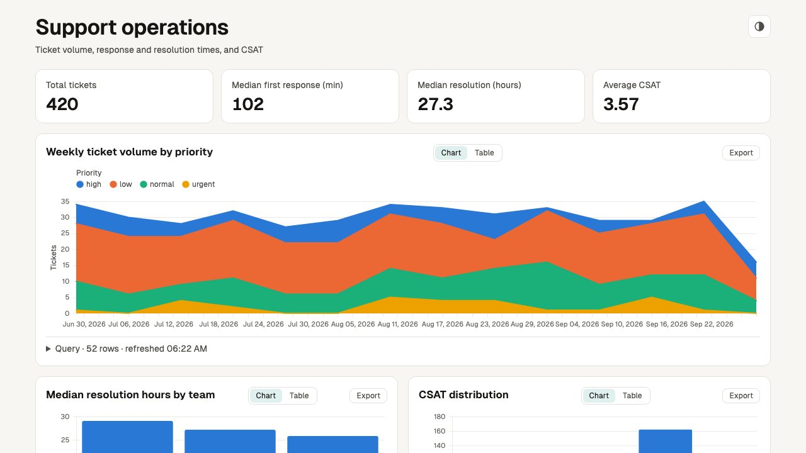
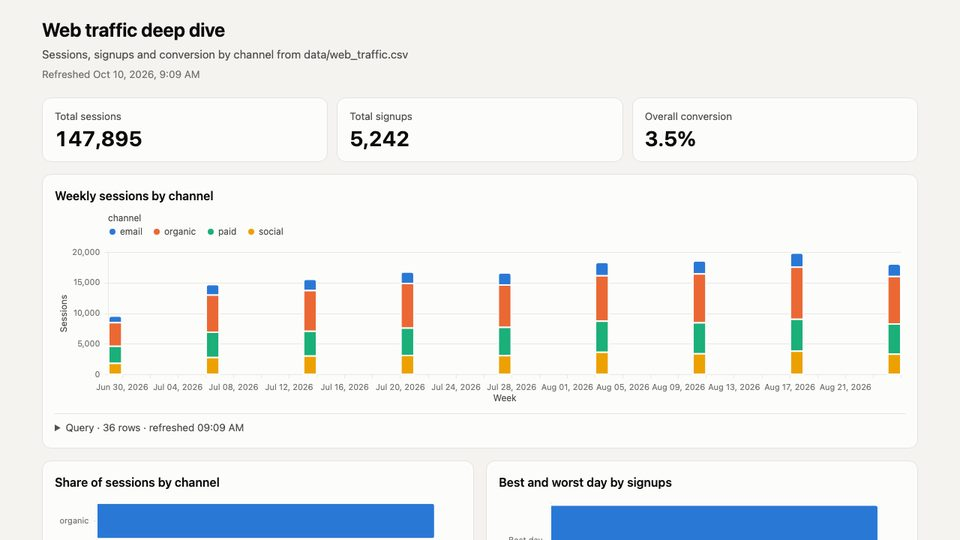
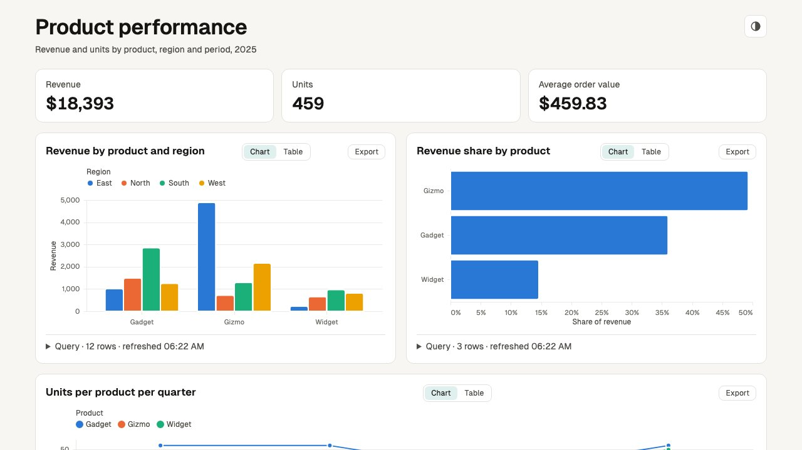
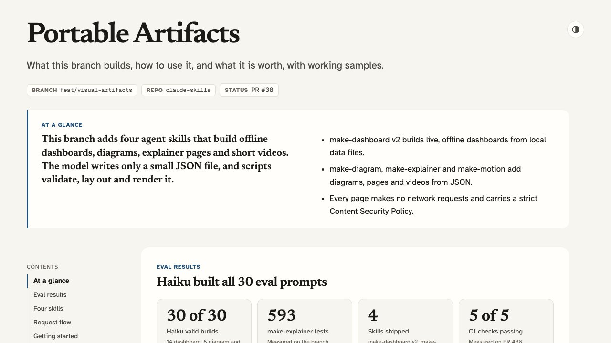
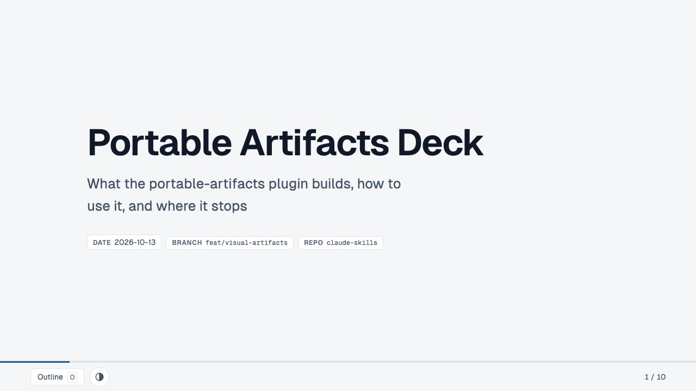
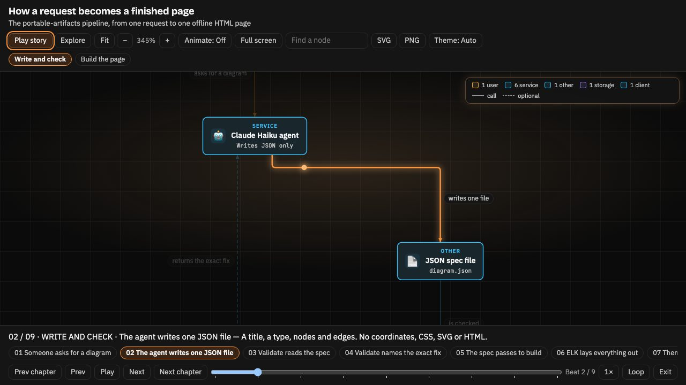
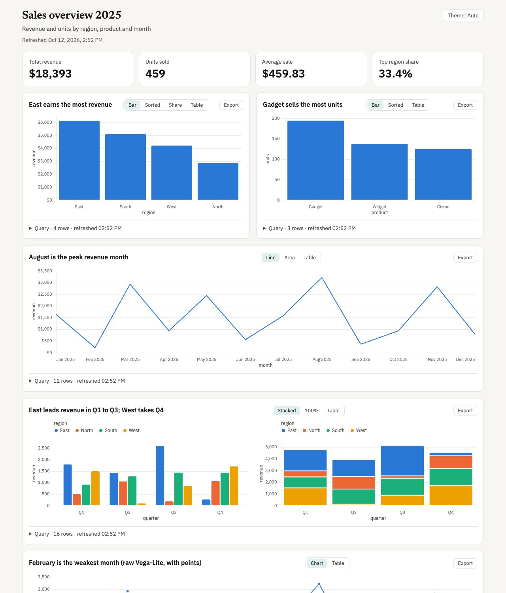
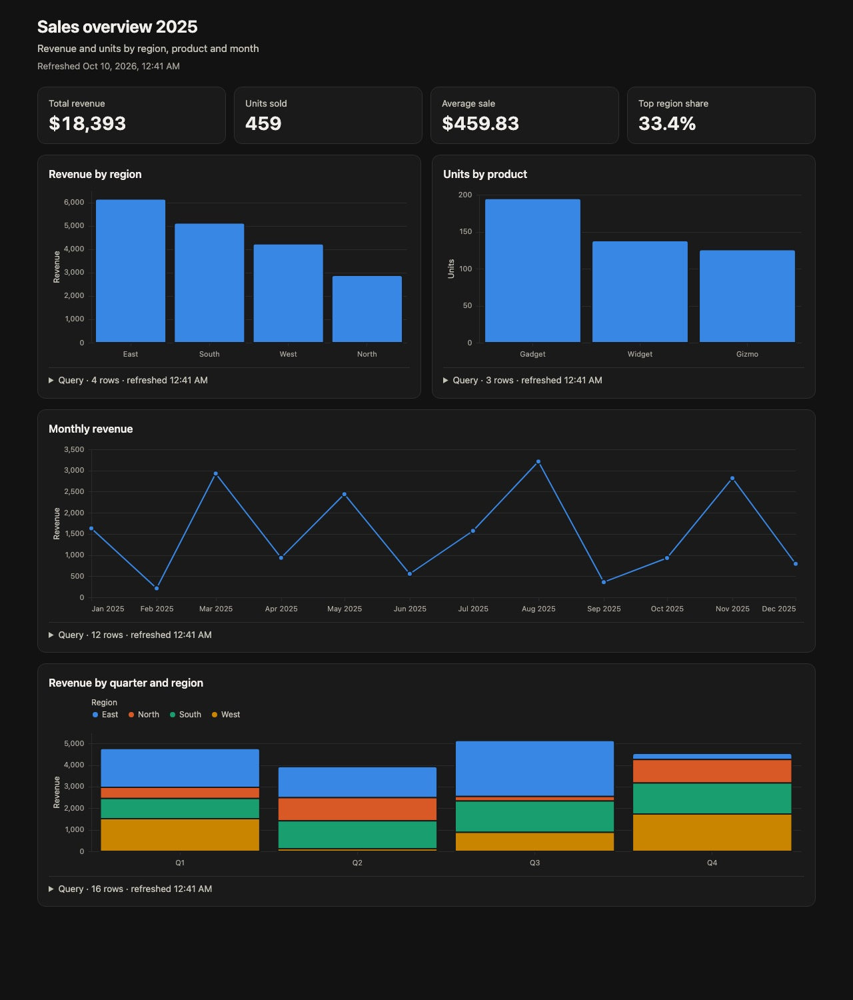

01 Overview
Four agent skills that do what hosted "artifact" features do, without a cloud, an account or a particular model. make-dashboard turns a prompt and a data file into one self-contained index.html of KPI tiles and charts (eleven chart kinds, four themes, live reload), where every chart expands to show its SQL, row count and refresh time. make-motion turns a prompt into a live preview with a scrubber and a deterministic 1080p MP4, and stays silent unless you ask for sound: music from a file you supply, or narration synthesised locally with Kokoro. make-diagram turns a prompt into a small JSON topology and renders an architecture diagram, flowchart, sequence diagram or state diagram as one offline HTML page, laid out with ELK, with zoom, hover tracing, a story player that follows a request hop by hop, an Explore panel and full screen. make-explainer turns a branch, an idea or a plan into one offline HTML page or slide deck of typed sections (a verdict, numbers, files changed, a timeline, a test checklist that remembers its ticks), embedding diagrams, charts and video clips; a linter rejects filler phrases and leftover placeholders before it builds. They work with any agent that can read files and run shell commands, and an installer ports them to Codex, GitHub Copilot, Gemini CLI and Claude Code.
The design is spec-first: the model writes one small JSON spec, and deterministic Node scripts do everything else. Field-level errors from the validator drive the retry loop.
02 See it in action
Real outputs, not mock-ups: each artifact below was produced by an agent (Claude Code, Sonnet) from the exact prompt shown, following the skill's SKILL.md. The card also shows the one follow-up line that asked for narration, because audio is never added unasked.
/make-motion — a 15-second 1080p explainer from one prompt, narrated on request
Download the MP4 ↓ (427 KB, H.264 + AAC voiceover)
The exact prompt
The follow-up (audio is opt-in)
Show the generated motion.json spec
/make-dashboard — a growth dashboard from two CSV files
The exact prompt
Show the generated dashboard.json spec
Generated by Claude Code (Sonnet) following SKILL.md from the prompt shown, then the follow-up, which added only the audio field. Spec and output unedited. See all samples →
02b Gallery
Eleven more real samples from all four skills. Open any page full screen, read its spec, or copy the prompt and run it yourself.
Dashboards
Growth overview

The exact prompt
Support operations

The exact prompt
Web traffic deep dive

The exact prompt
Product performance

The exact prompt
Motion
Audio is opt-in. Each clip was first rendered silent from the prompt shown, then given the one-line follow-up under it. The agent wrote the narration, synthesised it locally with Kokoro and changed only the spec's audio field. Press play to hear it.
From prompt to dashboard
The exact prompt
The follow-up (audio is opt-in)
Launch announcement
The exact prompt
The follow-up (audio is opt-in)
SQL guard explainer
The exact prompt
The follow-up (audio is opt-in)
Quarterly highlights
The exact prompt
The follow-up (audio is opt-in)
Explainers and diagrams
Portable Artifacts explainer

One page that explains this plugin: what each skill does, how to install it, the eval results as a chart, the pipeline as an embedded make-diagram figure, and the motion clips above as playable videos.
Portable Artifacts deck

The same story as a slide deck. Arrow keys or Space move between slides, O opens the outline, and slide 4 plays a make-motion clip.
How a request becomes a finished page

The pipeline from request to page, laid out by ELK. Play story (or P) opens beat 1; Space plays it, following a request hop by hop with a travelling dot and captions. Use Explore to click a node for what it sends and receives.
Every dashboard and motion sample was generated by Claude Code (Sonnet) following SKILL.md from the prompt shown; each motion clip then took the one-line follow-up, which added only the audio field. Specs and outputs unedited. The explainers and the diagram were written by Claude Haiku at low effort from a fact sheet, and a review pass corrected facts and layout in their specs before the final build. The diagram's stories, emoji and details were written by hand for the stories release (2026-10-14); its nodes and edges are the Haiku original.
03 Problem & why it's needed
Hosted artifact features lock you to one vendor, need an account and the network, and regenerate whole pages of code for every small tweak — so "make the second scene slower" can change everything else too.
04 Install
Claude Code — add the marketplace, then install portable-artifacts
/plugin marketplace add abhijitbansal/claude-skills/plugin install portable-artifacts@claude-skillsThen ask for a dashboard, a diagram, an explainer or a video, or call a skill directly: /make-dashboard …, /make-diagram …, /make-explainer … or /make-motion …. On first use the agent runs the one-time npm ci inside the skill folder (npm ci --omit=dev for make-dashboard, make-diagram and make-explainer).
Install with npx skills
npx skills add abhijitbansal/claude-skills --skill make-dashboard make-diagram make-explainer make-motionnpx skills add abhijitbansal/claude-skills --skill make-dashboard make-diagram make-explainer make-motion -a claude-code codex github-copilot -yThe second form installs to Claude Code, Codex and GitHub Copilot without prompting. The agent runs npm ci in the skill folder on first use (npm ci --omit=dev for make-dashboard, make-diagram and make-explainer). make-explainer needs make-diagram and make-dashboard beside it, and npx skills does not resolve dependencies, so name all three, as above. Without them a section that needs one fails validation and prints that exact command.
Codex, GitHub Copilot, Gemini CLI — or Claude Code without the marketplace
Each host reads skill folders from its own directory, and the skill itself is the slash command. The installer copies all four skills to the right place and installs their dependencies. It reads each skill's requires list, so installing make-explainer also installs make-diagram and make-dashboard.
git clone https://github.com/abhijitbansal/claude-skillsnode claude-skills/plugins/portable-artifacts/bin/install.mjs codex # ~/.agents/skillsnode claude-skills/plugins/portable-artifacts/bin/install.mjs copilot --project . # ./.github/skillsnode claude-skills/plugins/portable-artifacts/bin/install.mjs gemini # ~/.gemini/skills + commandsnode claude-skills/plugins/portable-artifacts/bin/install.mjs claude # ~/.claude/skills, no marketplaceHosts and where skills land
install.mjs claude · user ~/.claude/skills · project .claude/skills · invoke /make-dashboard …install.mjs codex · user ~/.agents/skills · project .agents/skills · invoke $make-dashboard … (or /skills)install.mjs copilot · user ~/.copilot/skills · project .github/skills · invoke /make-dashboard …install.mjs gemini · user ~/.gemini/skills + ~/.gemini/commands/*.toml · project .gemini/… · invoke /make-dashboard ….agents/skillsinstall.mjs agents · user ~/.agents/skills · project .agents/skills · invoke host-specificInstaller flags
git pull updates itnpm ciAny other agent
If it can read files and run shell commands: copy a skill folder into your project (together with its shared/ folder), run npm ci inside it (npm ci --omit=dev for make-dashboard, make-diagram and make-explainer; copy make-diagram and make-dashboard too if you use make-explainer), and add one line to your AGENTS.md (or .github/copilot-instructions.md).
05 Requirements
npm ci (once)in each skill folder; the agent runs it on first use (--omit=dev is enough for make-dashboard, make-diagram and make-explainer).mp4 needs nothing). git on PATH for gather.mjsnpx playwright install chromium inside the skill folder (Linux: add --with-deps); falls back to an installed Google Chrome. make-diagram builds without a browser; only its optional check.mjs uses one (needs a full npm ci) and skips cleanly without itPATHmake-motion only — brew install ffmpeg (macOS) / winget install Gyan.FFmpeg (Windows) / sudo apt-get install ffmpeg (Linux), or set FFMPEG_PATH (≥ 4.4 for audio tracks)make-motion tools by OS
Playwright itself comes with npm ci. Run the Chromium download inside the make-motion skill folder, so it matches the Playwright version the lockfile pins.
macOS (Homebrew)
brew install nodebrew install ffmpegnpx playwright install chromiumRun the npx line inside the make-motion skill folder.
Windows (PowerShell)
winget install OpenJS.NodeJS.LTSwinget install Gyan.FFmpegnpx playwright install chromiumOpen a new terminal after winget so node and ffmpeg are on PATH. Run the npx line inside the make-motion skill folder; if PowerShell refuses npx.ps1 (scripts disabled), use npx.cmd playwright install chromium. choco install ffmpeg or scoop install ffmpeg also work.
Linux (Debian/Ubuntu)
sudo apt-get install ffmpegnpx playwright install --with-deps chromiumRun the npx line inside the make-motion skill folder. Node 20+ from nodejs.org or a version manager; distro nodejs packages are often older. --with-deps installs the system libraries Chromium needs (asks for sudo).
06 Usability guide
/make-dashboard — a dashboard from a data file
You say "Revenue by region and the monthly trend from data/sales.csv". The agent inspects the data, writes dashboard.json (sources, SQL queries, KPIs, charts), validates it, and builds one offline index.html. Every chart expands to show its SQL, row count and refresh time. Rerun one command to refresh — no LLM involved. Sources: CSV, Parquet, JSON, DuckDB, SQLite, Postgres and MySQL.
pair to show two side by side.paper (default), blueprint, editorial, ink, plus an Auto / Light / Dark toggle on the page.--interval. A failed build shows a banner and keeps the last good page.node <skill-dir>/scripts/serve.mjs --watch dashboard.json --open

/make-diagram — an architecture, flow, sequence or state diagram
You say "Draw the checkout request path from the browser to the orders DB". The agent writes diagram.json (a title, a type, nodes and edges, or participants and messages), validates it, and builds one offline HTML page under ~/.agent/diagrams/. Validation lays the diagram out and lints the geometry, so a spec that passes is buildable. "Add a queue between the API and the worker" changes a few fields.
architecture (nested groups, 11 node kinds), flow, state and sequence (frames and notes).0 or double-click to fit, F full screen, hover to trace a node's edges, A for edge-flow animation, light and dark, SVG and PNG export.P to play the story: a moving camera and a travelling dot, one beat at a time. Space plays and pauses, arrows step the beats, Esc leaves. Beats come from the spec's stories or are built from the layout.E, click a node for its details, shift-click a second node for the route between them, / to find.icons.mjs search./make-explainer — a recap, checklist, explainer or slide deck
You say "Recap this branch for review, with a manual test checklist". A script reads the git branch (commits, files changed with line counts, test files) and scaffolds an explainer.json with the numbers, file list and timeline filled in. The agent replaces each TODO: with prose, validates, and builds one offline HTML page under ~/.agent/diagrams/. Validation fails on leftover placeholders, emoji, filler phrases such as "leverage" or "seamless", numbered titles, and (for slides) a slide that is too full. Section titles state the finding, not a label.
recap, checklist, concept and slides, each with a working example in the skill.O for an outline, #slide-3 deep links, one slide per printed page.node <skill-dir>/scripts/gather.mjs git > facts.jsonnode <skill-dir>/scripts/scaffold.mjs recap --facts facts.json > explainer.jsonnode <skill-dir>/scripts/validate.mjs explainer.jsonnode <skill-dir>/scripts/build.mjs explainer.json/make-motion — an animated explainer
You say "8-second clip: Q3 revenue up 18%, then a bar chart of Q1–Q3". The agent writes motion.json, validates it, opens a live preview with a scrubber, and renders a deterministic 1080p MP4. "Slow scene 2" changes one field, not the whole video. Audio is opt-in: say "with background music from music.mp3" or "with a voiceover reading it" and the spec gains audio tracks, mixed by ffmpeg and played in sync in the preview; narration is synthesised locally with Kokoro, so no file is needed for it.
Codex syntax
Codex invokes skills with $: $make-dashboard …, $make-diagram …, $make-explainer … or $make-motion … (or browse with /skills).
07 Security model
Dashboards run model-written SQL — read-only, boxed in
Each query must parse (DuckDB's own parser) as a single SELECT, and an allowlist over its syntax tree lets it read only the declared sources and its own CTEs: no query(), read_*, duckdb_*, system catalogs or sqlite_*/postgres_*/mysql_* bridges. It runs wrapped in a row limit and a timeout, against a DuckDB connection locked to the exact declared files (allowed_paths, external access off, configuration locked). Sources must live under the spec's folder unless you pass --allow-outside. For Postgres and MySQL, READ_ONLY only limits DuckDB: use a read-only database role. Credentials come only from environment variables and are scrubbed from errors and results as defence in depth; the SQL allowlist is the control.
Built pages embed the query results
Publishing index.html publishes the data.
No network from specs
Chart url/data/usermeta keys are rejected at any depth; motion colours can't be url(); pages run under a CSP without unsafe-eval; the renderer aborts any non-local request; local servers bind 127.0.0.1 and check the Host header.
08 Licences
Everything this plugin depends on is open source.
@duckdb/node-api)MITelkjs)EPL-2.0Not used, by design: Remotion and GSAP (free to use, but not under OSI licences).
09 What's inside
Skills
Tooling
Explore the other plugins
Second Wind
Run Claude overnight; auto-resume after 5-hour limit resets
prompt-craft
Sharpen rough prompts into specs, suggest follow-up commands
ios-dev
Build iOS apps, screenshot remotely, release to App Store
core-workflow
Opinionated dev workflow: commit + share + team up
linear-pm
Linear issues → code, branches, PRs — autonomous end-to-end
Session mods
test-board and session-compass: test results and session status above the prompt
Cache Clock
See your Copilot prompt cache expire; get asked before a costly cold send